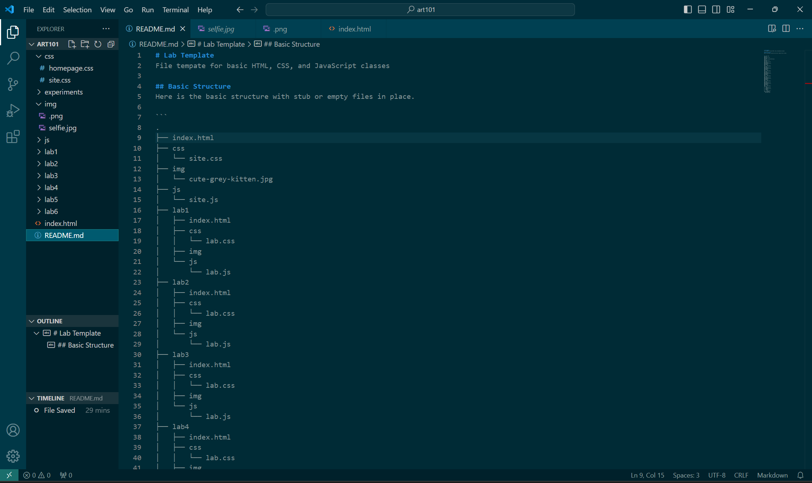
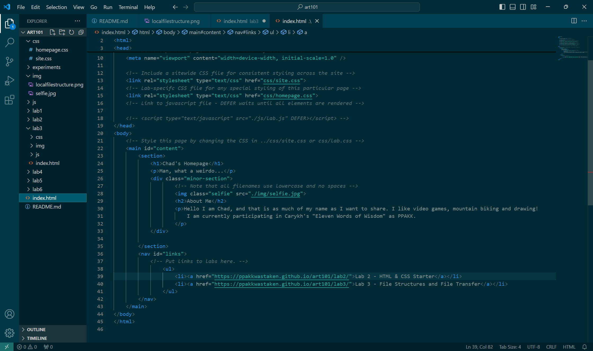
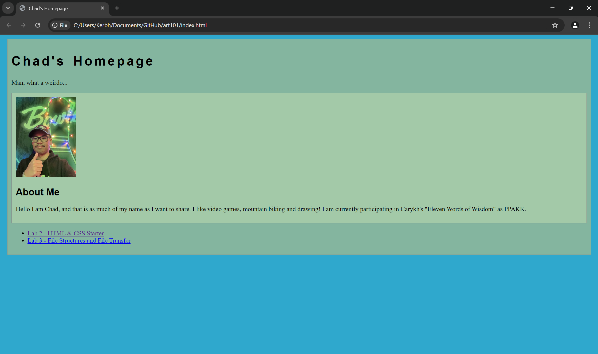
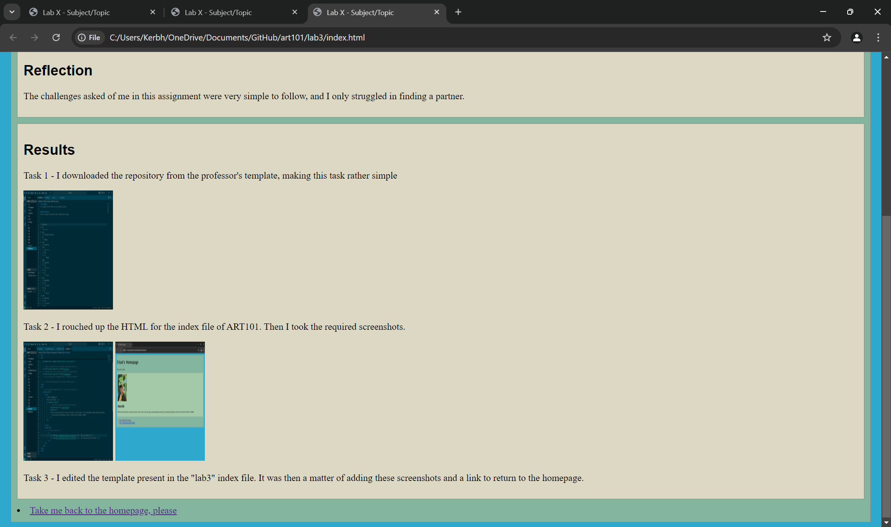

Lab 3 - File Structure and File Transfer
Challenge
The challenge of Lab 3 is to _
Problems
One difficulty that I faced was trying to get the links on my homepage to work properly. It turned out that I had made a typo, and accidentally typed "hfef" instead of "href". Ultimately, the main problem I faced was finding a partner.
Reflection
The challenges asked of me in this assignment were very simple to follow, and I only struggled in finding a partner.
Results
Task 1 - I downloaded the repository from the professor's template, making this task rather simple
Task 2 - I rouched up the HTML for the index file of ART101. Then I took the required screenshots.
 Task 3 - I edited the template present in the "lab3" index file. It was then a matter of adding these screenshots and a link to return to the homepage.
